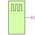

DigitalClockDigital Clock Source |

|
Information
This information is part of the Modelica Standard Library maintained by the Modelica Association.
The clock source forms pulses between the '0' value (forcing 0) and the '1' value (forcing 1). The pulse length width is specified in percent of the period length period. The number of periods is unlimited. The first pulse starts at startTime.
The clock source is a special but often used variant of the pulse source.
Parameters (3)
Connectors (1)
| y |
Type: DigitalOutput Description: Connector of Digital output signal |
|---|
Used in Examples (5)
|
Modelica.Electrical.Digital.Examples 4 to 1 Bit Multiplexer Example |
|
|
Modelica.Electrical.Digital.Examples Pulse Triggered Master Slave Flip-Flop |
|
|
Modelica.Electrical.Digital.Examples Full 1 Bit Adder Example |
|
|
Modelica.Electrical.Digital.Examples 3 Bit Counter Example |
|
|
Modelica.Electrical.Digital.Examples Generic N Bit Counter Example |